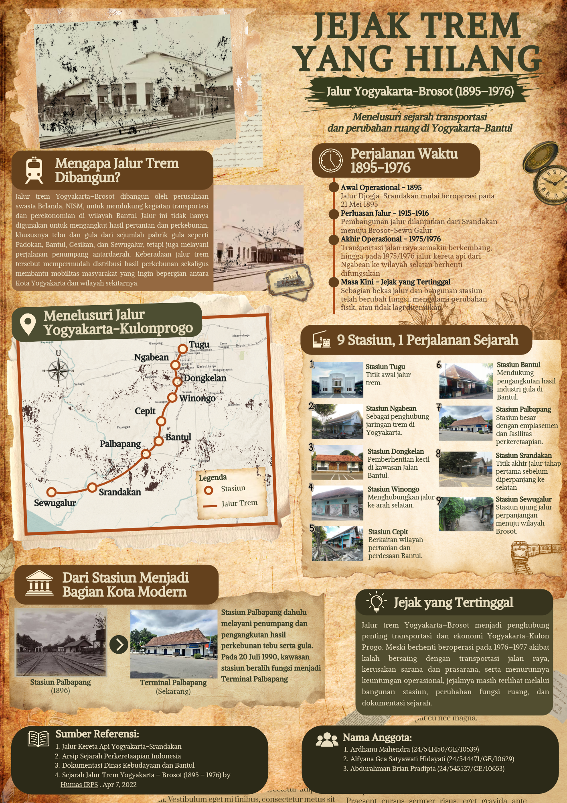
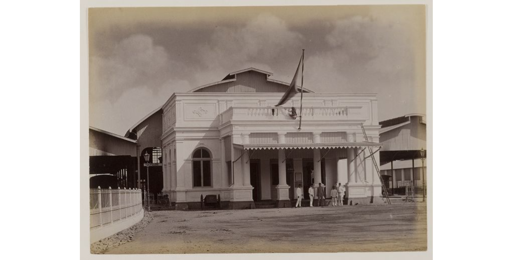

Menelusuri sejarah transportasi dan perubahan ruang di Yogyakarta–Bantul melalui dokumentasi visual, infografis, dan peta cerita digital.
Kenali perjalanan sejarah jalur trem Yogyakarta–Brosot melalui infografis yang menyajikan latar belakang pembangunan, perkembangan jalur, persebaran stasiun, serta jejak sejarah yang masih tertinggal.

Telusuri sejarah jalur trem Yogyakarta–Brosot secara lebih mendalam melalui ArcGIS StoryMaps. Jelajahi dokumentasi sejarah dan informasi spasial dalam satu perjalanan digital.

Jalur Yogyakarta–Brosot (1895–1976)
Sebuah eksplorasi sejarah transportasi
dan perubahan ruang di wilayah
Yogyakarta–Bantul.
Website ini mengintegrasikan infografis dan
ArcGIS StoryMaps sebagai media penyampaian
informasi mengenai sejarah jalur trem
Yogyakarta–Brosot.
Melalui dokumentasi digital, sejarah transportasi
masa lalu dapat dikenali dan dipelajari kembali.